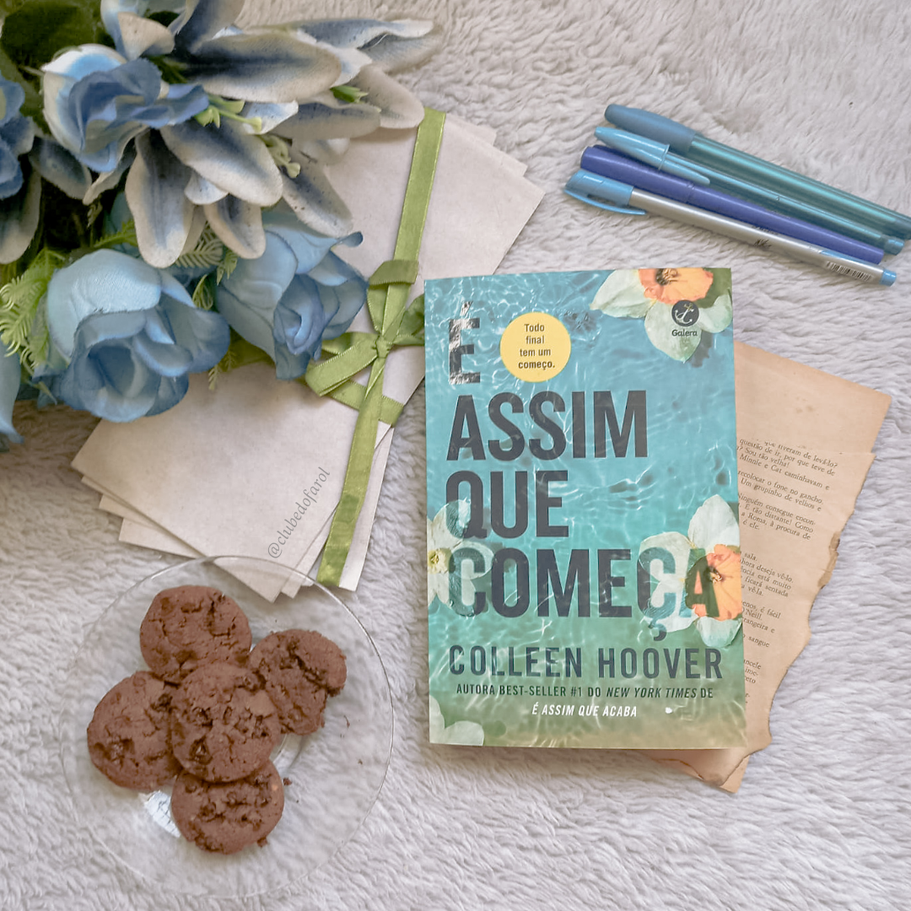

Colleen Hoover (Sulphur Springs, 11 de dezembro de 1979) é uma escritora norte-americana que escreve principalmente romances nos gêneros romântico e ficção para jovens adultos.
Ela é mais conhecida por seu romance de 2016, It Ends with Us . Muitos de seus trabalhos foram autopublicados antes de serem adquiridos por uma editora. Hoover vendeu cerca de 20 milhões de livros até outubro de 2022.
Em 2022 vendeu cerca de 2 milhões de livros apenas no Brasil. Em 2022 ocupou seis colocações entre os 10 mais vendidos na lista de best-sellers do New York Times.
Colleen Hoover- autora norte-americana.
Início da vida e sua carreira
Colleen Hoover nasceu no dia 11 de dezembro de 1979, em Sulphur Springs, no Texas, e cresceu em Saltillo, também no Texas. Seus pais se chamam Vannoy Fite e Eddie Fennel, e se formou no Saltillo High School em 1998.
Dois anos depois, em 2000, ela se casou com Heath Hoover, de quem herdou o sobrenome e teve com ele três filhos. O sobrenome Hoover foi adotado como nome artístico também, e passou a ser a assinatura em suas obras.
A autora ainda se formou no Texas A&M – Commerce, conseguindo o diploma em Serviço Social. Foi a partir dessa sua formação que Hoover conseguiu trabalhar em diversos trabalhos sociais e de ensino, até começar a sua vida como escritora.
No mês de novembro de 2011, Hoover iniciou o seu primeiro romance, intitulado Slammed. Ela não tinha a intenção de publicar a obra, mas mudaria de ideia depois de alguns feedbacks e publicou o trabalho no ano seguinte.
Essa obra foi inspirada em uma letra da música dos Avett Brothers, “Head Full of Doubts/Road Full of Promise”. Por causa disso, ela incorporou as letras da banda ao longo dessa história.
Os feedbacks positivos vieram depois de alguns meses, quando ele foi revisado pela blogueira Maryse Black, que deu para a obra 5 estrelas. Depois disso, as vendas dos seus dois primeiros livros decolaram muito rápido.
Em 2020, os seus livros tiveram um ressurgimento e um grande destaque graças a plataforma TikTok, sendo um dos destaques na hashtag #BookTok.
Livros Mais Famosos
É assim que acaba
O romance mais pessoal da carreira de Colleen Hoover, É assim que acaba discute temas como violência doméstica e abuso psicológico de forma sensível e direta.
Em É assim que acaba, Colleen Hoover nos apresenta Lily, uma jovem que se mudou de uma cidadezinha do Maine para Boston, se formou em marketing e abriu a própria floricultura. E é em um dos terraços de Boston que ela conhece Ryle, um neurocirurgião confiante, teimoso e talvez até um pouco arrogante, com uma grande aversão a relacionamentos, mas que se sente muito atraído por ela.
Quando os dois se apaixonam, Lily se vê no meio de um relacionamento turbulento que não é o que ela esperava. Mas será que ela conseguirá enxergar isso, por mais doloroso que seja?
É assim que acaba é uma narrativa poderosa sobre a força necessária para fazer as escolhas certas nas situações mais difíceis. Considerada a obra mais pessoal de Hoover, o livro aborda sem medo alguns tabus da sociedade para explorar a complexidade das relações tóxicas, e como o amor e o abuso muitas vezes coexistem em uma confusão de sentimentos.
“…Você vai sorrir em meio às lágrimas.” – Sarah Pekkanen, autora de Perfect Neighbors
Livro: É assim que acaba.
É assim que começa
Lily e seu ex-marido, Ryle, acabaram de entrar em um ritmo civil de coparentalidade quando de repente ela esbarra em seu primeiro amor, Atlas, novamente. Depois de quase dois anos separados, ela está feliz porque, pela primeira vez, o tempo está do lado deles, e ela imediatamente diz sim quando Atlas a convida para um encontro.

Livro: É assim que começa.
Mas sua empolgação é rapidamente prejudicada pelo conhecimento de que, embora eles não sejam mais casados, Ryle ainda faz parte de sua vida - e Atlas Corrigan é o único homem que ele odiará ser na vida de sua ex-esposa e filha.
Alternando entre as perspectivas de Lily e Atlas, It Starts with Us começa exatamente de onde parou o epílogo do fenômeno best-seller “emocionante e pulsante” (Sarah Pekkanen, autora de Vizinhos Perfeitos ) . Revelando mais sobre o passado de Atlas e seguindo Lily enquanto ela abraça uma segunda chance de amor verdadeiro enquanto navega com um ex-marido ciumento, isso prova que “ninguém oferece uma leitura emocional como Colleen Hoover” (Anna Todd, autora best-seller do New York Times
Todas as suas (im) perfeições
Um inesquecível drama da autora de Verity e É assim que acaba sobre um casamento conturbado e uma promessa esquecida que pode ser capaz de salvá-lo.
Todas as suas imperfeições narra a história de Quinn e Graham. Eles se conhecem no pior dia de suas vidas; ela chega mais cedo de uma viagem para surpreender o noivo, ele testemunha a traição da namorada.
E é assim que ambos acabam no corredor de um prédio, trocando confidências, biscoitos da sorte e palavras de conforto. Fim da dança... se o destino não tivesse outros planos para os dois. Meses mais tarde, os acordes tocam para o casal mais uma vez e eles se reencontram. Graham está convencido de que são almas gêmeas.
Quinn jamais se sentiu dessa forma antes. A intensidade do sentimento os assusta, mas eles mergulham de cabeça mesmo assim. O casamento é tudo o que sonhavam, a parceria perfeita. Mesmo nos momentos difíceis, sabem que podem contar com o outro. Nenhum deles desiste do amor que sentem. Até que a primeira nota dissonante abala a sinfonia do casal.
Até que Quinn parece estar disposta a trocar tudo o que é pela única coisa que não consegue ser: mãe. A luta do casal por um filho arrisca os alicerces da relação. Quinn não pode engravidar. Graham não é um candidato para adoção por conta de um erro do passado. O impasse os deixa parados no salão, no silêncio. A orquestra está em suspenso. Os dois parecem surdos para a música do amor.
Em Todas as suas imperfeições , Colleen coloca sua marca em mais uma obra comovente e inesquecível.
Livro: Todas as suas (im)perfeições.
CoHo e seu universo de livro
Slammed
#1: Métrica (Slammed)
#2: Pausa (Point of Retreat)
#3: Essa Garota (This Girl)
Hopeless
#4: Um Caso Perdido (Hopeless)
#5: Sem Esperança (Losing Hope)
#6: Em Busca de Cinderela (Finding Cinderella)
#7: Todas as Suas (Im)Perfeições (All your perfects)
#8: Em busca de Cinderela / Em busca da perfeição (Finding Perfect)